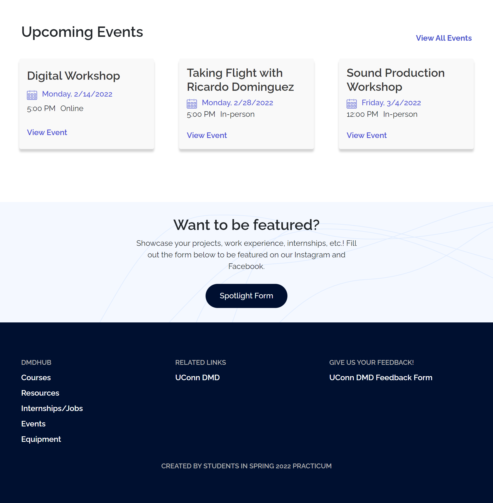
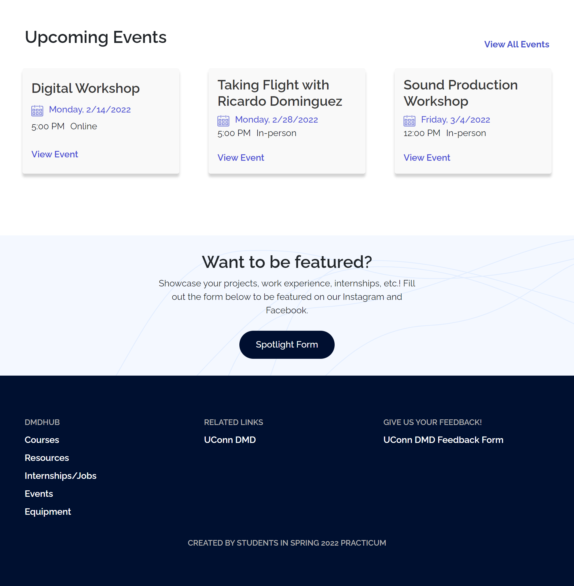
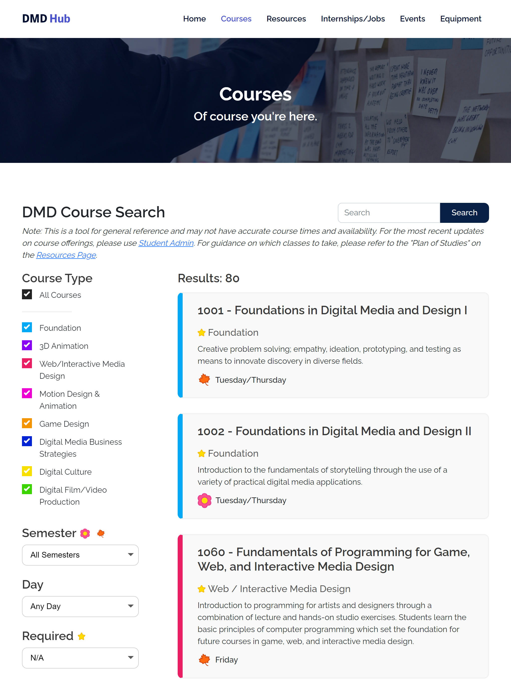
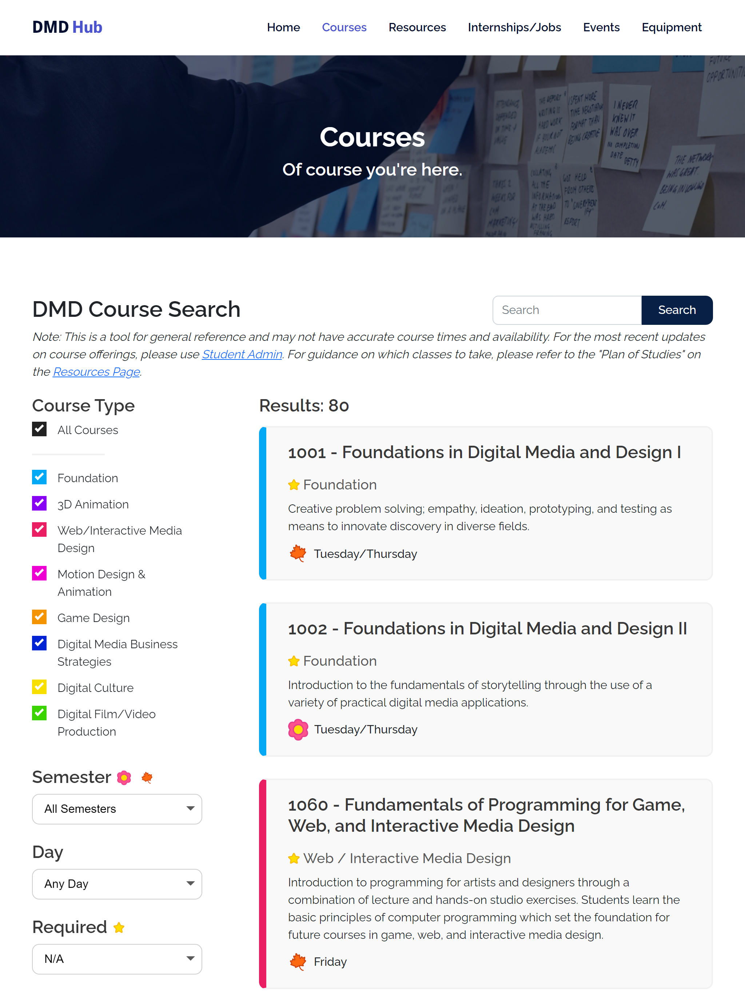

Put simply, the DMD Hub is for DMD by DMD containing all things DMD! The DMD Hub was created by the Spring 2022 Web Practicum class as a tool for DMD students and faculty to access resources, course information, events, and more. The DMD Hub was created using HTML, CSS, JavaScript, and Bootstrap. The team identified user stories based off of their experience in DMD. They used an Agile approach working in sprints to add new features. It was tested with DMD students and faculty to ensure user needs were being met.
 

 

The Internships/Jobs Page and the Courses Page were the most intensive and had the most functionality. For both pages the user has the ability to filter courses and internships and also perform and keyword search.